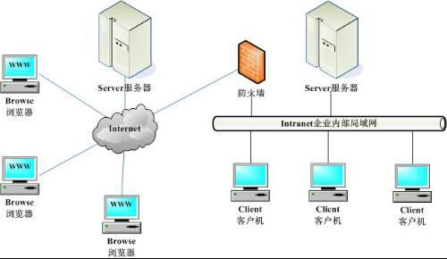
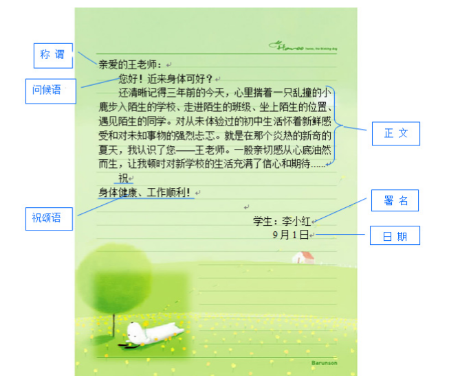
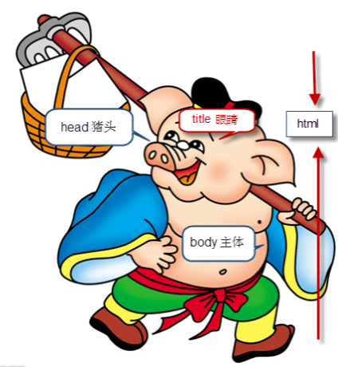
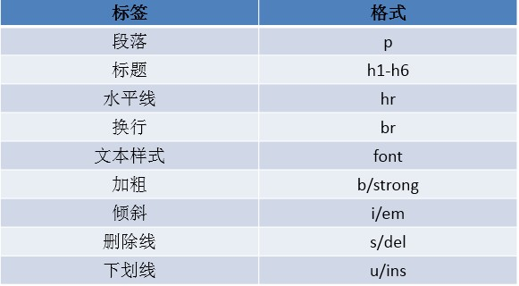

关于浏览器和服务器
浏览器
浏览器是指可以显示网页服务器或者文件系统的HTML文件（标准通用标记语言的一个应用）
内容，并让用户与这些文件交互的一种软件
国内网民计算机上常见的网页浏览器有，QQ浏览器、Internet Explorer、
Firefox、Safari，Opera、Google Chrome、百度浏览器、搜狗浏览器、
猎豹浏览器、360浏览器、UC浏览器、傲游浏览器、世界之窗浏览器等，浏览器
是最经常使用到的客户端程序。
服务器
服务器，也称伺服器，是提供计算服务的设备。由于服务器需要响应服务请求，并进行处理，因此一般来说服务器应具备承担服务并且保障服务的能力。服务器的构成包括处理器、硬盘、内存、系统总线等，和通用的计算机架构类似，但是由于需要提供高可靠的服务，因此在处理能力、稳定性、可靠性、安全性、可扩展性、可管理性等方面要求较高。在网络环境下，根据服务器提供的服务类型不同，分为文件服务器，数据库服务器，应用程序服务器，WEB服务器等
浏览器和服务器之间的关系
了解http协议
http协议
超文本传输协议（HTTP，HyperText Transfer Protocol)是互联网上应用最为广泛的一种网络协议。所有的WWW文件都必须遵守这个标准。设计HTTP最初的目的是为了提供一种发布和接收HTML页面的方法。 HTTP是一个客户端和服务器端请求和应答的标准（TCP）。客户端是终端用户，服务器端是网站。通过使用Web浏览器、网络爬虫或者其它的工具，客户端发起一个到服务器上指定端口（默认端口为80）的HTTP请求。 通过HTTP或者HTTPS协议请求的资源由统一资源标示符（Uniform Resource Identifiers）（或者，更准确一些，URLs）来标识
初步认识HTML
HTML
超文本标记语言，标准通用标记语言下的一个应用。“超文本”就是指页面内可以包含图片、链接，甚至音乐、程序等非文字元素。主要用于 描述文档的内容，无法描述文档的样式(类似txt文本和word)。
后缀名
HTML是一个网页文件的拓展名，和txt、jpg、mp3一样，是一个文件格式。.html文件就是网页文件。后缀名与文件之间是没有直接的关系。
- 后缀名仅仅决定了文件的打开方式
- 真正决定文本类型的是文件的内容
HTML发展
- 超文本标记语言（第一版）——在1993年6月作为互联网工程工作小组（IETF）工作草案发布（并非标准）：
- HTML 2.0——1995年11月作为RFC 1866发布，在RFC 2854于2000年6月发布之后被宣布已经过时
- HTML 3.2——1997年1月14日，W3C推荐标准
- HTML 4.0——1997年12月18日，W3C推荐标准
- HTML 4.01（微小改进）——1999年12月24日，W3C推荐标准
- HTML 5——2014年10月28日，W3C推荐标准 https://www.w3.org
HTML结构
了解格式中每个标签的含义
代码编辑器
由于每次用记事本写代码都要重复的写html的结构代码，太麻烦了，为了提高我代码的编写效率，可以使用一个代码编写工具sublimetext、atom(开源)、webstorm。
HTML基础标签
HTML中的注释方式
在HTML中还有一种特殊的标记——注释标记。如果需要在HTML文档中添加一些便于阅读和理解但又不需要显示在页面中的注释文字，就需要使用注释标记。 其基本语法格式如下：``
常见标签学习
图像标签img
TML网页中任何元素的实现都要依靠HTML标记，要想在网页中显示图像就需要使用图像标记。
创建超链接
在HTML中创建超链接非常简单，只需用标记环绕需要被链接的对象即可，其基本语法格式如下：
锚点链接
通过创建锚点链接，用户能够快速定位到目标内容。
创建锚点链接分为两步：
- 使用“链接文本”创建链接文本。
- 使用相应的id名标注跳转目标的位置